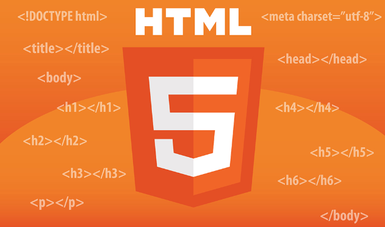

What is Frontend?
Frontend-ის განვითარება გულისხმობს ვებ-გვერდის ვიზუალური კომპონენტების შექმნასა და მართვას, რომლებიც მომხმარებელს ბრაუზერში ხედავს. მასში შედის HTML, CSS და JavaScript.
HTML (HyperText Markup Language) არის სტრუქტურული ენა, რომელიც გამოიყენება ვებ-გვერდების შექმნისათვის. CSS (Cascading Style Sheets) არის ენა, რომელიც გამოიყენება სტილიზაციისთვის, ხოლო JavaScript არის პროგრამირების ენა, რომელიც უზრუნველყოფს დინამიკურ ფუნქციონალობას.
HTML
HTML არის ვებ-გვერდების შექმნის ძირითადი ენა. ის აღწერს სტრუქტურას, რომელზეც გვხვდება ტექსტი, სურათები, ტაბლიცები და სხვა ელემენტები. HTML-ის ძირითადი კომპონენტები არიან: ელემენტები, ატრიბუტები და ტექსტი.
History of HTML
HTML შეიქმნა 1991 წელს, როდესაც ტიმ ბერნერს-ლი მუშაობდა ვებ-სისტემაზე. მისი მიზანი იყო მარტივი და ეფექტური სტრუქტურის შექმნა დოკუმენტების განსაზღვრისთვის, რათა ისინი გადმოწერილიყო და განთავსებულიყო ინტერნეტში.
CSS
CSS (Cascading Style Sheets) გამოიყენება ვებ-გვერდების სტილიზაციისათვის. იგი განსაზღვრავს ფერებს, ფონტებს, განლაგებას და ბევრ სხვა ვიზუალურ ასპექტს. CSS-სთან ერთად ვებ-გვერდები ხდება გლობალური და კროს-პლატფორმული.

JavaScript
JavaScript არის პროგრამირების ენა, რომელიც გამოიყენება ვებ-გვერდებზე დინამიკური ელემენტების შესაქმნელად, როგორიცაა ფანჯრები, ანიმაციები, ფორმების ვალიდაცია და სხვა.